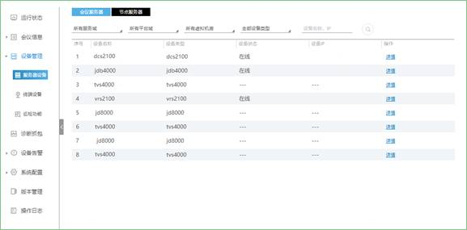
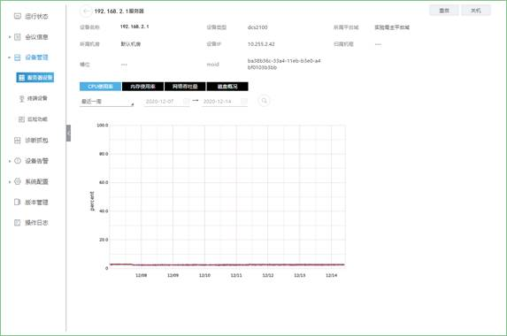
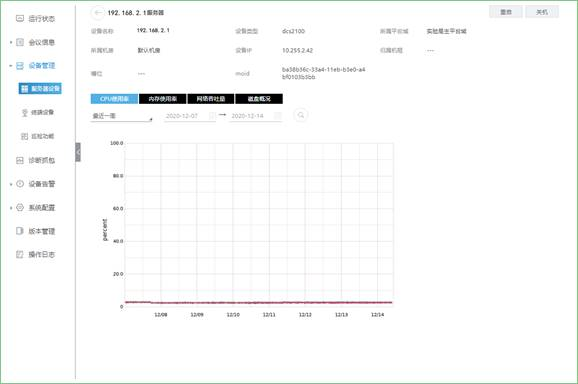
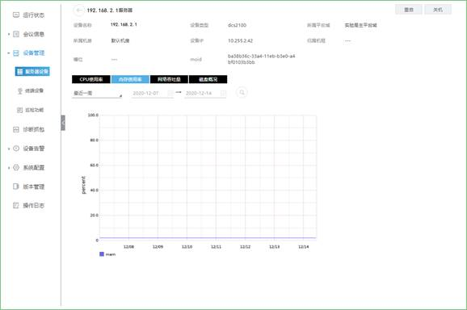
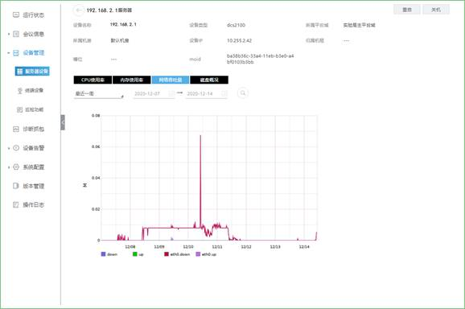
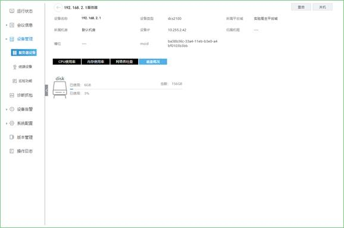

服务器设备，根据登录账号显示其所管辖域下的所有服务器设备的状态信息，包括会议服务器和节点服务器。

点击详情，查看服务器的CPU使用率/内存使用率/网络吞吐量/磁盘概况，选择时间，点击 ，可以快速搜索。
，可以快速搜索。

点击【重启】，对该服务器进行重启操作。
点击【关机】，对该服务器进行关机操作。
CPU使用率
点击CPU使用率，在此界面将显示CPU的使用情况，如下图所示：

内存使用率
点击内存使用率，在此界面将显示内存的使用情况，如下图所示：

网络吞吐量
点击网络吞吐量，在此界面将显示网络吞吐量的情况，如下图所示：

磁盘概况
点击磁盘概况，在此界面将显示磁盘的使用情况，如下图所示：
